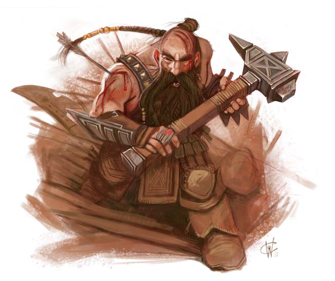

Kalad the Paladin was rescued by the Dusk Wardens from the Tusk's troops occupying the Monastery of the Sundered Chain.
After leading them to defeat Tusk and Myrissa at the Nexus of the Vents Kalad returned to Overlook and took up a position
as a sergeant in the watch.
Now this heavily muscled dwarven paladin no longer looks quite as haunted as he did in the tunnels of Bordrin's Watch. He is gruff
but friendly, and a staunch ally of the Dusk Wardens. His seemingly blind willingness to support his allies makes him look
intractable and foolish to the more politically savvy.